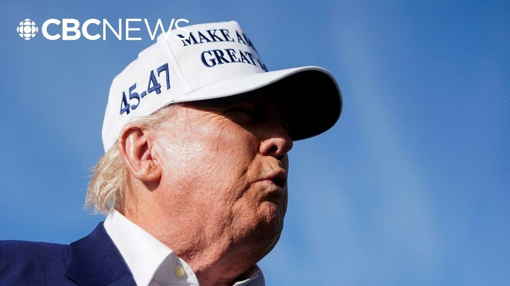

【特朗普称普京在乌克兰致命空袭后“完全疯了”】
Summary: Ukraine reports Russia's largest drone attack in over three years, with 355 drones and nine cruise missiles targeting cities, killing at least 12 people, prompting Trump to condemn Putin's actions as "crazy" and warn of Russia's potential downfall.
摘要： 乌克兰报告称俄罗斯发动了三年来最大规模的无人机袭击，出动355架无人机和9枚巡航导弹袭击城市，造成至少12人死亡，特朗普谴责普京的行为“疯狂”，并警告俄罗斯可能因此垮台。

⏱️ Estimated Reading Time: 5 min
Ukraine says Russian forces carried out the largest drone attack of the more than three-year war overnight.
乌克兰称俄罗斯军队在夜间发动了三年多来最大规模的无人机袭击。
This is video from Ukrainian emergency responders in Odessa to show you here.
这是来自敖德萨的乌克兰应急人员的视频。
The Ukrainian air force says Russian forces launched 355 drones and nine cruise missiles.
乌克兰空军称俄罗斯军队发射了355架无人机和9枚巡航导弹。
The air strikes are targeting Ukrainian cities a day after another mass wave of drones and missiles overnight on Sunday killed at least 12 people.
空袭目标是乌克兰城市，此前周日夜间另一波大规模无人机和导弹袭击造成至少12人死亡。
That attack also along the largest of the war.
那次袭击也是战争中规模最大的一次。
Villa Marx is with us on the story from our bureau in London this morning.
今早维拉·马克思从我们伦敦分部为我们报道此事。
Villim, the Russian air strikes on Ukraine.
维利姆，俄罗斯对乌克兰的空袭。
They have brought a strong rebuke from US President Donald Trump directed at Russia's President Vladimir Putin.
这引发了美国总统特朗普对俄罗斯总统普京的强烈谴责。
What does Trump now say?
特朗普现在怎么说？
Yeah, it was some pretty intemperate language from the US president in response to questions following some of those recent attacks on cities across Ukraine, including the capital.
是的，美国总统在回应有关乌克兰各地城市（包括首都）近期袭击的提问时使用了相当激烈的言辞。
I'm not happy with what Putin's doing.
我对普京的行为感到不满。
He's killing a lot of people and I don't know what the hell happened to Putin.
他杀害了许多人，我不知道普京到底怎么了。
I've known him a long time, always gotten along with him, but he's sending rockets into cities and killing people.
我认识他很久了，一直与他相处融洽，但他现在向城市发射火箭弹并杀害人民。
And I don't like it at all.
我一点也不喜欢这样。
Okay, we're in the middle of talking and he's shooting rockets into Kiev and other cities.
好吧，我们正在谈话，他却向基辅和其他城市发射火箭弹。
I don't like it at all.
我一点也不喜欢这样。
I don't like what Putin.
我不喜欢普京的行为。
And he followed up, Heather, with some language on his social media post just after that outburst, talking about the fact that something has happened to Vladimir Putin, saying he's gone absolutely crazy and warning the conflict in Ukraine could lead to the downfall of Russia.
希瑟，他在那次爆发后不久又在社交媒体上发文，称弗拉基米尔·普京出了些问题，说他“完全疯了”，并警告乌克兰冲突可能导致俄罗斯垮台。
He also had some warnings for the Ukrainian president though, Vladimir Zalinski, saying that he was getting himself into trouble through what he said and warning that he needed to stop causing problems through his own speech.
不过他也对乌克兰总统弗拉基米尔·泽连斯基提出警告，称他的言论正在给自己惹麻烦，并警告他需要停止通过自己的言论制造问题。
Heather, we have heard Donald Trump push hard for a ceasefire in Russia's war on Ukraine and promising he could deliver one.
希瑟，我们听到特朗普极力推动俄罗斯对乌克兰战争的停火，并承诺他可以促成停火。
Villim, what could his shift in tone toward Putin now mean for any peace talks?
维利姆，他现在对普京态度的转变对和平谈判意味着什么？
It's interesting.
这很有趣。
Just in the last hour or so, we've actually had a reaction from the Kremlin to what President Trump said there.
就在过去一小时左右，克里姆林宫对特朗普总统的言论做出了回应。
Dmitri Prescott, the Russian president's chief spokesperson, saying that the Russians were really grateful to the Americans and to President Trump personally for their assistance in organizing and launching this negotiation process.
俄罗斯总统首席发言人德米特里·普雷斯科特表示，俄罗斯人对美国人和特朗普总统本人在组织和启动这一谈判过程中提供的帮助表示衷心感谢。
He essentially put Trump's outburst down to what he termed emotional overload and emotional reactions.
他基本上将特朗普的爆发归因于他所谓的情绪过载和情绪反应。
Meanwhile, you remember Heather, after President Putin proposed direct peace talks for the first time in years, he didn't turn up to them in Estanbul early this month, there will now likely be another round of talks in the Vatican next month.
与此同时，希瑟，你还记得普京总统多年来首次提议直接和平谈判，但他本月初没有出席在伊斯坦布尔的谈判，现在很可能下个月在梵蒂冈举行另一轮谈判。
President Trump making clear that he will be sending some of his top officials to those direct talks between Russia and Ukraine.
特朗普总统明确表示，他将派遣一些高级官员参加俄罗斯和乌克兰之间的直接谈判。
He's also seemingly weighing some suggestions from the Europeans to impose greater financial sanctions on Russia, something the Europeans are currently doing themselves.
他似乎也在考虑欧洲人提出的对俄罗斯实施更大规模金融制裁的建议，欧洲人目前正在这样做。
Thank you so much, Villim.
非常感谢，维利姆。
I appreciate it.
我很感激。
Villim is in London this morning.
维利姆今早在伦敦。